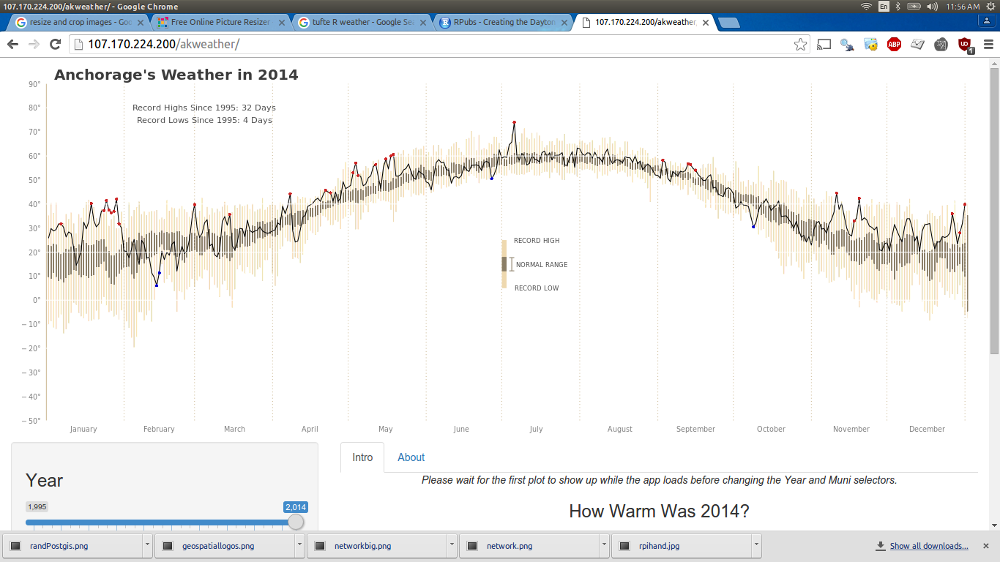
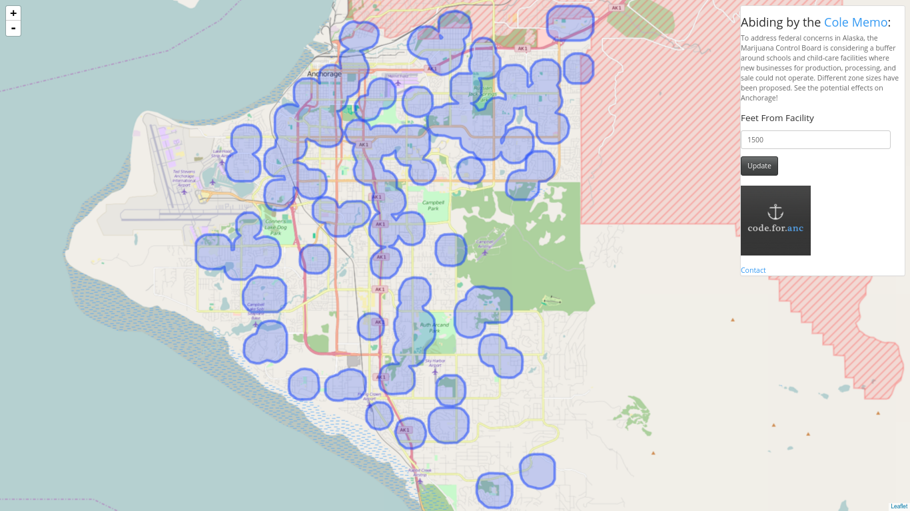
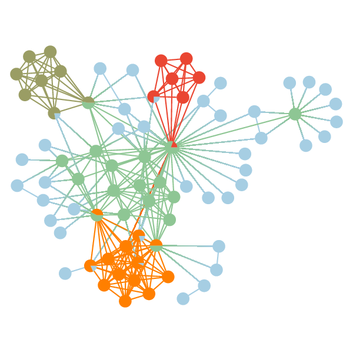

ASA was founded to make business solutions to complex and routine tasks. We can help you find that hard to find answer or set up an automated system to reduce labor costs with automated reporting. We have the background to implement the solution you are looking for so give us a call or email. Clear communication on their project with our clients is our highest principle.
Specialties
- Microcomputers
- Statistical Modeling And Interactive Web Applications
- Geospatial Databases And Interactive Web Mapping
- Graphing Complex Relationships
- Automated Charting And Data Cleaning
- ...And other skills as well. Contact us with your project.
When you have a project that requires transmitting sensor data remotely we would be happy to help determine the pros and cons of implementing different systems and then helping make that project a reality. The open sensor space is booming now and we can communicate devices through mobile data, gps, radio, and wifi. Going this route with Alaska Statistical Automation will cost fractions less then the big guys. We can bring in samples to show you what we do and how we do it.
When your solution that you require involves intense caluclations and visualizing the results in an intuitive and intersting way, we can help build a product for you that will work either within your local network at the bussiness or publicly on the web. We can show our work like no one else in the business and pride ourselves on explaining our processes.
There is a vast amount of freely available mapped data in various data formats. We can advise you on a strategy to solve your problem under best practices and when there are issues with the underlying data, be flexible enough to find a solution that goes beyond the scope of database administration, Geographic Information Systems, or web design. Out of the box solutions in this field have large annual service fees and limited in their potential to visualize the data. We can keep you under budget and provide a product that is special to your users.
If your company wants to stay at the front of the competition, it needs to understand the relationships of your environment. Which clients needs what? How do potential clients cluster together to do business and how can you make new business connections. There is a wealth of data available to solve these problems and we will help you strategize building and analyzing these connections with you in a rigorous mathematical fashion.
 Our strength is that we show our work better than anyone else in the analytics field. If your database is updated regularly, we will help automate reports at your specified intervals to create business intelligence. We can set it up create easily printable reports (.pdf files, word documents, or in your web browser) that you can recieve by email. This process alone can reduce the repetive and human-error prone work of producing weekly reports and save your company money instantly.
Our strength is that we show our work better than anyone else in the analytics field. If your database is updated regularly, we will help automate reports at your specified intervals to create business intelligence. We can set it up create easily printable reports (.pdf files, word documents, or in your web browser) that you can recieve by email. This process alone can reduce the repetive and human-error prone work of producing weekly reports and save your company money instantly.
Previous Clients
- MEA
- local tech startups
Previous Projects
- Parcel Mapping
- Google Intelligence
- People Mover
CONTACT INFO email: hans.thompson1@gmail.com
phone: 360-628-3860
- Parcel Mapping
- Google Intelligence
- People Mover